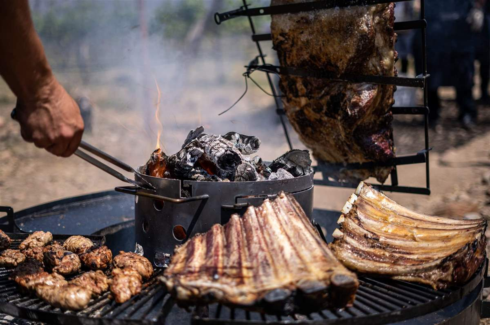
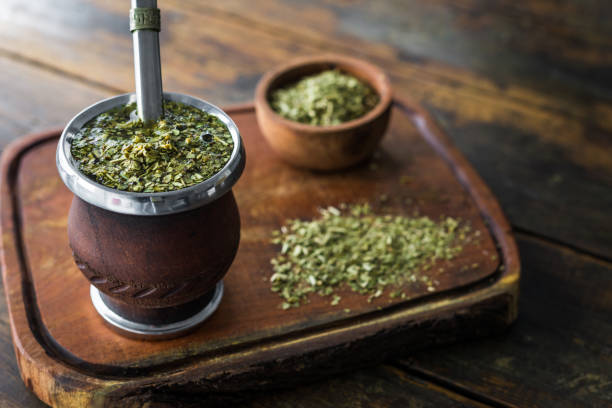

Qué comer en Argentina
Con influencias italianas y españolas, debido a la inmigración, la cocina argentina se caracteriza por su variedad de carnes que le han hecho situarse como uno de los países donde degustar su popular asado. Compuesto de ternera o cerdo principalmente, lo más destacado de estos platos elaborados a la parrilla y con fuego de leña es su corte, siendo las costillas y el vacío los más comunes.
La salsa que acompaña la carne, el chimichurri, es una de las delicias más conocidas de la gastronomía argentina, donde tampoco faltan los embutidos, sus ricas empanadas rellenas de numerosos ingredientes o sus dulces, donde los alfajores y las facturas se llevan toda la atención. Aunque en Argentina se pueden encontrar diferentes tipos de bebidas, la más consumida de todas es el mate, la infusión que se ha convertido en un símbolo del país y cuyo consumo es todo un ritual para los argentinos.
Alfajores de maicena
Este dulce típico de Argentina fue introducido en el país durante la época precolombina, pues tiene origen de la antigua Al Andalus. Se trata de galletas elaboradas con mantequilla, huevo, azúcar, almidón de maíz, extracto de vainilla y coco que se juntan de dos en dos con relleno de dulce de leche. Esta crema de color marrón y sabor a caramelo es una de las más populares del país que suele acompañar muchos de sus dulces. Una vez las galletas están unidas entre sí, los alfajores se cubren de chocolate y se pueden bañar en azúcar o glaseado.

Asado argentino
Es el plato típico argentino por excelencia y una de las delicias del país. Consiste en diferentes piezas de carne que, como su propio nombre indica, se asan a la brasa. Dependiendo de la región, la técnica puede variar. La típica entre los gauchos suele ser el asado a la estaca o a la cruz, que significa colgar la carne en un asador de hierro en la tierra y colocarla alrededor del fuego. En las ciudades también es común ver parrillas, aunque la mayoría de ellas sin cerrar. El tipo de carne que se suele consumir es la de vaca, cordero o el cabrito, aunque en el litoral también es frecuente encontrarse con asados de pescado. El corte también es importante, siendo los más populares la costilla o el vacío.
Berenjenas en escabeche
Preparadas como tapa, en bocadillos o como guarnición con el asado, las berenjenas en escabeche son uno de los alimentos más conocidos de un menú argentino que suelen acompañar muchos de sus platos. Cocinadas con agua y vinagre blanco, las berenjenas están condimentadas con orégano, pimienta y ajo. Además, se suelen macerar con aceite de oliva. Su sabor es suave y encaja muy bien con otros platos más copiosos.

Choripán
Este plato típico de Argentina consiste en un chorizo criollo o parrillero asado e introducido entre dos trozos de pan. De textura blanda, generalmente está compuesto de carne vacuna y un 30% de cerdo. Para otorgarle más sabor, éste también puede ir acompañado de salsa chimichurri, elaborada con orégano, ajo y perejil. Esta comida rápida es típica de Río de la Plata, aunque actualmente se puede encontrar en todo Argentina, así como otros países de Latinoamérica.

Empanadas argentinas
Las empanadas son otra de las especialidades gastronómicas de Argentina. De herencia española, este plato cuenta con numerosas variedades dependiendo de la región donde uno se encuentre. Una de las más populares es la de carne, que suele ir aderezada con cebolla, huevo duro y aceitunas. Son las llamadas tucumanas y a veces también pueden contener pasa de uva. El pollo, el jamón, el queso o las verduras son algunos de los ingredientes más comunes y más fáciles de encontrar en los restaurantes y puestos callejeros. Otras empanadillas populares son las cordobesas, de sabor agridulce debido a que contienen azúcar espolvoreada en su parte superior. Si la deseamos dulce, entonces no hay que dejar de probar las rellenas de dulce de leche o de membrillo.

Mate
El mate es la bebida por excelencia de los argentinos. Forma parte de su cultura y su preparación, así como su consumo es todo un ritual para los locales. Suelen utilizarlo también para socializar. Esta infusión elaborada con yerba mate cuenta con un sabor un poco amargo debido al tanino de sus hojas. También es espumosa y estimulante, pues contiene cafeína, así como digestiva y depuradora. Los argentinos suelen tomarla a cualquier hora del día, aunque es ideal para acompañar sus populares facturas, así como detrás de una comida. El mate se suele servir caliente en un recipiente redondo llamado mate, en ocasiones de calabaza, y se suele beber a través de una bombilla (una pajita).